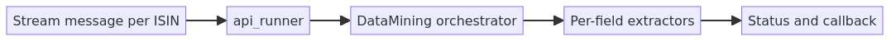

Data Mining Engine (DME)
Production K3s platform for corporate & municipal bond extraction
- GitOps delivery
- Redis queue workers
- Server & cluster UI
- API access portal
Enterprise extraction platform on K3s: FastAPI microservices, Redis-stream jobs, human-in-the-loop validation, and superuser cluster controls. Delivered via GitLab CI image builds, Helm chart promote, and Argo CD sync to stage.
View architecture & flow diagrams ↓Core Technical Achievements
- Process Scaling & GIL Bypass: To fully utilize an 80+ core Xeon server, I engineered the system to bypass Python's Global Interpreter Lock by spawning separate processes via `ProcessPoolExecutor`, processing 80+ ISINs simultaneously.
- Role-Based CPU Tiering & Burst Throttling: Implemented job-level semaphores to cap batches allocating exact CPU fractions dynamically per user, including a dynamic priority engine that allows admin burst throttling when no normal users are active.
- Microservices Architecture: Built heavily decoupled services using FastAPI, Python, PostgreSQL, and Redis across Corporate, Municipal, Validation, and Document Processing domains.
- Redis Queue Extraction (default): Backend publishes ISIN jobs to Redis streams; corporate/municipal replicas consume in parallel for multi-node throughput. Optional Numaflow/NATS JetStream (`dme-jobs`) runs as cluster infrastructure alongside HTTP fallback paths.
- GitOps delivery: GitLab CI builds immutable images (
dme-*-commit-sha), promote jobs updatedocfin_ai_charts, Argo CD auto-syncsdme-stageon K3s. - Security & Threat Modeling: Conducted comprehensive SecureCoder threat modeling to map trust boundaries across extraction engines, SMB mounts, and the frontend API, ensuring enterprise-grade security.
- Domain-Restricted Access: Custom secure signup flows validating against `@factentry.com` domains natively in Zod and FastAPI.
Architecture & system flows
End-to-end view of DME on K3s: how users and APIs reach the platform, how jobs are dispatched to workers, how GitOps delivers images, and how operators manage the fleet. Click any diagram to zoom.

dme-core-app, PostgreSQL & Redis, SMB volumes, CI build/promote, Argo sync. Server management patches worker placement at runtime.


build-k3-* → registry → promote docfin_ai_charts → Argo CD → dme-stage.
USE_QUEUE_EXTRACTION and Redis streams. Fallback: async HTTP run-direct to worker pods.
api_runner → DataMining orchestrator → field extractors → status/callback.
/server-potential → nodes API → Postgres allocations → Deployment patches (Argo ignoreDifferences on replicas/affinity).
Secure Domain-Restricted Login

Role-Aware Main Dashboard

Live Backend CPU & Queue Telemetry

GitLab CI — build → promote → deploy (K3 stage)
Data Extraction Workflows
Support for asynchronous Corporate and Municipal bond data extraction. Jobs track progress dynamically with persistent runtime backups securely routed to the internal File Manager.

Corporate Bond Extraction Queue

Municipal Bond Extraction Queue


Runtime Recovery File Manager
Interactive Validation (Human-in-the-Loop)
A highly optimized validation UI with strict dual-pane scroll isolation, ranked PDF match navigation, and interactive text highlighting directly over native PDFs loaded from SMB mounts.

Interactive PDF/TXT Highlighting Workspace

Ranked Match Navigation & Quick Corrections
LLM Text Parser & Insights
Integrated advanced text parsing for unstructured documents, offering visual analytics, language distribution stats, and structured insights using selectable local LLMs (via Ollama).

Parser Setup & Extractor Selection

Language Distribution & Data Insights
Communication Live Workspace
A real-time WebSocket hub highlighting live extraction stages, system chatter, and collaborative tools.

Main Team Support Chat & Broadcasts

Collapsible Slide-Out Chat Drawer
Admin Jobs & Team Management
Robust backend tools for superusers to manage cross-tenant extraction jobs and govern dynamic team allocations natively in the browser.

Global Admin Jobs View

Global User Management

Role & Permissions Editor

Extraction Results Table

Detailed Item Inspector
Job Scheduler Engine

Recurring Job Configuration

Visual Extraction Calendar
Server Cluster Management
The cluster management UI (`/server-potential`) provides superuser control for worker/server placement (Fleet, Controls, Argo tabs), disk-pressure visibility, worker evacuate/relocate with explicit target nodes, dynamic Kubernetes affinity patches, and live extraction throttling overrides via PostgreSQL.

Node & Live Pod Fleet Map

Placement Controls & CPU Budgets

Backend Throttling Configuration

Frontend Server Targets

ArgoCD Drift Sync Checks
API Access Portal
A built-in developer-facing portal generating cURL examples, response schemas, API key tier provisioning, and live usage monitoring natively from the FastAPI backend.

Interactive Endpoint Documentation

API Key Provisioning

Rate Limits & Tier Management
Two Repositories
- data-mining-engine — application code, GitLab CI (
build-k3-*,promote-k3-*-docfin), branchk3s-numaflow-migration. - docfin_ai_charts — Helm charts Argo CD syncs (
DME/core-app,dme-data-services, …). Image pins live invalues.yaml.
All architecture diagrams (full stack, dispatch, worker pipeline, cluster ops) are in the Overview → Architecture & system flows section.
CI/CD → GitOps → K3 (stage)
Push or New pipeline on k3s-numaflow-migration builds all service images at one commit SHA, promote jobs commit tags to charts Git, then Argo CD rolls dme-stage automatically.
Live GitLab pipeline: build → promote → deploy
CI/CD: build-k3 → registry → promote docfin_ai_charts → Argo sync dme-stage
Runtime Architecture (browser → workers)
Request path and data plane (queue mode). Server management patches corp/muni placement at runtime; Argo ignores those fields via ignoreDifferences.
Full stack diagram (runtime + GitOps)
Edge TLS, core app, data plane, GitLab CI, and Argo CD.
K3s Container Deployment
The application is fully containerized across a multi-node K3s cluster. The engines mount massive SMB network shares dynamically to skip HTTP transfer overhead.

Master-Worker K3s Topology

Portainer Cluster Metrics
Argo CD Applications
Argo CD watches docfin_ai_charts (not the app repo). Applications include dme-core-app, dme-data-services, dme-platform-network, and dme-nats with automated sync and self-heal. SMB PVCs sync before worker rollouts.

Global ArgoCD Application Fleet

Core App Synchronization

Core App Deployment Tree

SMB Volumes & Postgres Data

Platform Networking

NATS JetStream Queue Infrastructure

Cert Manager Deployment

Internal PKI Management